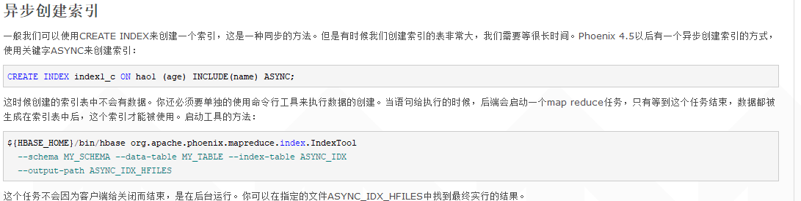
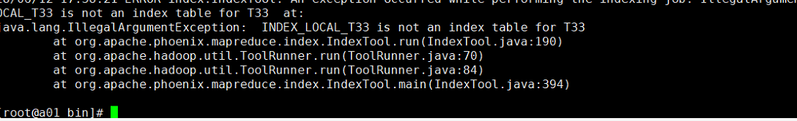
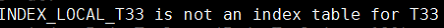

<!DOCTYPE html><html lang="en"><head><meta name="generator" content="Hexo 3.9.0"><meta charset="utf-8"><meta name="keywords" content="松林羊, ysl, songlinsheep, andus, blog, 个人站点, 个人网站"><meta name="description" content="松林羊的个人网站，用于记录，分享。欢迎交流^-^"><meta name="viewport" content="width=device-width,initial-scale=1,maximum-scale=1"><title> 【转载】Phoenix 异步建立二级索引失败，Hbase表名需大写 | 松林羊</title><link rel="shortcut icon" href="/smile.ico"><link rel="stylesheet" href="/css/style.css"><link rel="stylesheet" href="/fancybox/jquery.fancybox.min.css"><script src="/js/pace.min.js"></script><script>!function(e,t,o,c,i,a,n){e.DaoVoiceObject=i,e[i]=e[i]||function(){(e[i].q=e[i].q||[]).push(arguments)},e[i].l=1*new Date,a=t.createElement(o),n=t.getElementsByTagName(o)[0],a.async=1,a.src=c,a.charset="utf-8",n.parentNode.insertBefore(a,n)}(window,document,"script",("https:"==document.location.protocol?"https:":"http:")+"//widget.daovoice.io/widget/0f81ff2f.js","daovoice"),daovoice("init",{app_id:"1559132c"}),daovoice("update")</script></head></html><body><main class="content"><section class="outer"><article id="post-Phoenix-异步建立二级索引失败，Hbase表名需大写" class="article article-type-post" itemscope itemprop="blogPost" data-scroll-reveal><div class="article-inner"><header class="article-header"><h1 class="article-title" itemprop="name"> 【转载】Phoenix 异步建立二级索引失败，Hbase表名需大写</h1></header><div class="article-meta"> <a href="/2019/01/25/Phoenix-异步建立二级索引失败，Hbase表名需大写/" class="article-date"><time datetime="2019-01-25T01:44:31.000Z" itemprop="datePublished">2019-01-25</time></a><div class="article-category"> <a class="article-category-link" href="/categories/中间件/">中间件</a></div> &emsp;<i class="fe fe-bar-chart"></i> <span class="post-count">746</span>字 &emsp;<i class="fe fe-clock"></i> <span class="post-count">3</span>分钟</div><div class="article-entry" itemprop="articleBody"><p><font color="gray" size="3">环境：phoenix-5.0.0-Hbase-2.0.0</font><br>关于怎么建立二级索引的原理及方法，我就不复述了，有需要的可以看看下面这些博客，挺好的<br>转至：<a href="https://www.cnblogs.com/haoxinyue/p/6724365.html" target="_blank" rel="noopener">https://www.cnblogs.com/haoxinyue/p/6724365.html</a><br> <a href="https://www.cnblogs.com/mario-nb/p/6350266.html?utm_source=itdadao&amp;utm_medium=referral" target="_blank" rel="noopener">https://www.cnblogs.com/mario-nb/p/6350266.html?utm_source=itdadao&amp;utm_medium=referral</a></p><p>在这里我想强调的是，当我们的hbase表数据非常大时，测试大概5000万以上的数据建二级索引就会遇到连接超时的问题。</p><p>当然我们也可以调整连接时间如下：<br>在客户端配置文件hbase-site.xml中，把超时参数设置大一些，足够build索引数据的时间。</p><figure class="highlight xml"><table><tr><td class="gutter"><pre><span class="line">1</span><br><span class="line">2</span><br><span class="line">3</span><br><span class="line">4</span><br><span class="line">5</span><br><span class="line">6</span><br><span class="line">7</span><br><span class="line">8</span><br><span class="line">9</span><br><span class="line">10</span><br><span class="line">11</span><br><span class="line">12</span><br><span class="line">13</span><br><span class="line">14</span><br><span class="line">15</span><br><span class="line">16</span><br><span class="line">17</span><br><span class="line">18</span><br><span class="line">19</span><br><span class="line">20</span><br><span class="line">21</span><br><span class="line">22</span><br><span class="line">23</span><br><span class="line">24</span><br><span class="line">25</span><br><span class="line">26</span><br><span class="line">27</span><br><span class="line">28</span><br></pre></td><td class="code"><pre><span class="line"><span class="tag">&lt;<span class="name">property</span>&gt;</span></span><br><span class="line">​<span class="tag">&lt;<span class="name">name</span>&gt;</span>phoenix.query.timeoutMs<span class="tag">&lt;/<span class="name">name</span>&gt;</span></span><br><span class="line"><span class="tag">&lt;<span class="name">value</span>&gt;</span>1200000<span class="tag">&lt;/<span class="name">value</span>&gt;</span></span><br><span class="line"><span class="tag">&lt;/<span class="name">property</span>&gt;</span></span><br><span class="line"><span class="tag">&lt;<span class="name">property</span>&gt;</span></span><br><span class="line">​<span class="tag">&lt;<span class="name">name</span>&gt;</span>phoenix.query.keepAliveMs<span class="tag">&lt;/<span class="name">name</span>&gt;</span></span><br><span class="line"><span class="tag">&lt;<span class="name">value</span>&gt;</span>1200000<span class="tag">&lt;/<span class="name">value</span>&gt;</span></span><br><span class="line"><span class="tag">&lt;/<span class="name">property</span>&gt;</span></span><br><span class="line"><span class="tag">&lt;<span class="name">property</span>&gt;</span></span><br><span class="line">​<span class="tag">&lt;<span class="name">name</span>&gt;</span>hbase.rpc.timeout<span class="tag">&lt;/<span class="name">name</span>&gt;</span></span><br><span class="line"><span class="tag">&lt;<span class="name">value</span>&gt;</span>1200000<span class="tag">&lt;/<span class="name">value</span>&gt;</span></span><br><span class="line"><span class="tag">&lt;/<span class="name">property</span>&gt;</span></span><br><span class="line"><span class="tag">&lt;<span class="name">property</span>&gt;</span></span><br><span class="line">​<span class="tag">&lt;<span class="name">name</span>&gt;</span>hbase.regionserver.lease.period<span class="tag">&lt;/<span class="name">name</span>&gt;</span></span><br><span class="line"><span class="tag">&lt;<span class="name">value</span>&gt;</span>1200000<span class="tag">&lt;/<span class="name">value</span>&gt;</span></span><br><span class="line"><span class="tag">&lt;/<span class="name">property</span>&gt;</span></span><br><span class="line"><span class="tag">&lt;<span class="name">property</span>&gt;</span></span><br><span class="line">​<span class="tag">&lt;<span class="name">name</span>&gt;</span>hbase.client.operation.timeout<span class="tag">&lt;/<span class="name">name</span>&gt;</span></span><br><span class="line"><span class="tag">&lt;<span class="name">value</span>&gt;</span>1200000<span class="tag">&lt;/<span class="name">value</span>&gt;</span></span><br><span class="line"><span class="tag">&lt;/<span class="name">property</span>&gt;</span></span><br><span class="line"><span class="tag">&lt;<span class="name">property</span>&gt;</span></span><br><span class="line">​<span class="tag">&lt;<span class="name">name</span>&gt;</span>hbase.client.scanner.caching<span class="tag">&lt;/<span class="name">name</span>&gt;</span></span><br><span class="line"><span class="tag">&lt;<span class="name">value</span>&gt;</span>1000<span class="tag">&lt;/<span class="name">value</span>&gt;</span></span><br><span class="line"><span class="tag">&lt;/<span class="name">property</span>&gt;</span></span><br><span class="line"><span class="tag">&lt;<span class="name">property</span>&gt;</span></span><br><span class="line">​<span class="tag">&lt;<span class="name">name</span>&gt;</span>hbase.client.scanner.timeout.period<span class="tag">&lt;/<span class="name">name</span>&gt;</span></span><br><span class="line"><span class="tag">&lt;<span class="name">value</span>&gt;</span>1200000<span class="tag">&lt;/<span class="name">value</span>&gt;</span></span><br><span class="line"><span class="tag">&lt;/<span class="name">property</span>&gt;</span></span><br></pre></td></tr></table></figure><p>这种方式显然看起来就不太友好<br>所以，我们就想到了用异步索引的方式去建立<br><br>照着网上的方式:兴高采烈的去开干了，在linux输入以下命令：</p><figure class="highlight shell"><table><tr><td class="gutter"><pre><span class="line">1</span><br><span class="line">2</span><br><span class="line">3</span><br></pre></td><td class="code"><pre><span class="line"><span class="meta">$</span>&#123;HBASE_HOME&#125;/bin/hbase org.apache.phoenix.mapreduce.index.IndexTool</span><br><span class="line">  --schema MY_SCHEMA --data-table MY_TABLE --index-table ASYNC_IDX</span><br><span class="line">  --output-path ASYNC_IDX_HFILES</span><br></pre></td></tr></table></figure><p>结果直接就报错了：<br><br>它竟然说我的索引不是数表的索引，我当时就蒙了，这是咋回事呢？马上跑到phoenix client去查看，分明就是它的索引啊 ，可以通过命令查看</p><figure class="highlight sql"><table><tr><td class="gutter"><pre><span class="line">1</span><br></pre></td><td class="code"><pre><span class="line"><span class="keyword">select</span> TABLE_NAME,DATA_TABLE_NAME,INDEX_TYPE,INDEX_STATE,INDEX_DISABLE_TIMESTAMP <span class="keyword">from</span> system.catalog <span class="keyword">where</span> INDEX_TYPE <span class="keyword">is</span> <span class="keyword">not</span> <span class="literal">null</span>;</span><br></pre></td></tr></table></figure><p>那又是咋回事啊，想想是不是建索引出问题了，遂不信邪的再一次实验，继续出错，错误如出一辙，正当我准备放弃的时候。突然发现这好像有些不对，<br><br>我的表分明是<font color="red">小写的t33</font>，咋它说我的索引表却<font color="red">不是T33</font>的index呢，是不是这个IndexTool有某种方式，将所有的表都<font color="red">转化为大写</font>的呢，还是它<font color="red">只认识大写的表</font></p><p>接下来我就<font color="red">创建了一个大写的表去建索引，果然这次并没报错误</font>，至于具体是哪种原因，没找到方法去研究。</p><p>结论：平时总喜欢建小写的hbase表，因为大写的看着别扭，这不自己把自己坑了几天，过程用同步索引都因为超时等各种原因，导致失败多次，让我哭会。。。。</p><p>大家又遇到这个问题么？</p><p><font color="gray" size="3">原文链接：<a href="https://www.cnblogs.com/henyu/p/9179653.html" target="_blank" rel="noopener">https://www.cnblogs.com/henyu/p/9179653.html</a></font></p></div><footer class="article-footer"><ul class="article-tag-list"><li class="article-tag-list-item"><a class="article-tag-list-link" href="/tags/Hbase/">Hbase</a></li><li class="article-tag-list-item"><a class="article-tag-list-link" href="/tags/Phoenix/">Phoenix</a></li></ul><div style="text-align:center;color:#ccc;font-size:14px;margin-top:10px"> ------------- 本文结束&nbsp;<i class="fe fe-smile"></i>&nbsp;感谢您的阅读 -------------</div></footer></div><nav class="article-nav"> <a href="/2019/01/26/MySQL中将一列以逗号分隔的值行转列/" class="article-nav-link"><strong class="article-nav-caption">前一篇</strong><div class="article-nav-title"> MySQL中将一列以逗号分隔的值行转列</div></a> <a href="/2019/01/15/Phoenix-varchar-空串等于null的坑/" class="article-nav-link"><strong class="article-nav-caption">后一篇</strong><div class="article-nav-title">Phoenix varchar 空串等于null的坑</div></a></nav><div class="comment_headling" style="margin-top:5rem"><font size="5"><i class="fe fe-comments"></i> 评论</font></div><div class="comment"></div><script src="https://cdn1.lncld.net/static/js/3.0.4/av-min.js"></script><script src="/js/Valine.min.js"></script><script type="text/javascript">GUEST_INFO=["nick","mail","link"],guest_info="nick,mail,link".split(",").filter(function(i){return-1<GUEST_INFO.indexOf(i)}),guest_info=0==guest_info.length?GUEST_INFO:guest_info,new Valine({av:AV,el:".comment",app_id:"fq4O7Xaf1cYDbADGellNEn6V-gzGzoHsz",app_key:"a626rNIHkVVk8tGBBCfaQjb9",placeholder:"记得留下你的昵称和邮箱...可以快速收到回复ヾﾉ≧∀≦)o",meta:guest_info,notify:!0,verify:!1,avatar:"monsterid",recordIP:!0,visitor:!1,lang:"zh-cn"})</script></article></section><footer class="footer"><div class="outer"><ul class="list-inline"><li>已分享 45 篇博文，累计 <span class="post-count">46.7k</span> 字</li><ul class="list-inline"><li><i class="fe fe-smile-alt"></i>&nbsp;访客数&emsp;<span id="busuanzi_value_site_uv"></span></li><li><i class="fe fe-bookmark"></i>&nbsp;文章访问量&emsp;<span id="busuanzi_value_page_pv"></span></li></ul></ul><ul class="list-inline"><li><span id="timeDate">载入天数...</span><span id="times">载入时分秒...</span></li><script>var now=new Date;function createtime(){var n=new Date("07/28/2019 10:02:00");now.setTime(now.getTime()+250),days=(now-n)/1e3/60/60/24,dnum=Math.floor(days),hours=(now-n)/1e3/60/60-24*dnum,hnum=Math.floor(hours),1==String(hnum).length&&(hnum="0"+hnum),minutes=(now-n)/1e3/60-1440*dnum-60*hnum,mnum=Math.floor(minutes),1==String(mnum).length&&(mnum="0"+mnum),seconds=(now-n)/1e3-86400*dnum-3600*hnum-60*mnum,snum=Math.round(seconds),1==String(snum).length&&(snum="0"+snum),document.getElementById("timeDate").innerHTML="已等候你 "+dnum+" 天 ",document.getElementById("times").innerHTML=hnum+" 小时 "+mnum+" 分 "+snum+" 秒"}setInterval("createtime()",250)</script><ul class="list-inline"><li>&copy; 2019-2019 松林羊</li><li>Theme <a href="https://github.com/zhwangart/hexo-theme-ocean">Ocean</a></li></ul></ul></div></footer></main><aside class="sidebar sidebar-specter"> <button class="navbar-toggle"></button><nav class="navbar"><div class="logo"> <a href="/"></a></div><ul class="nav nav-main"><li class="nav-item"> <a class="nav-item-link" href="/" target="_self">主页</a></li><li class="nav-item"> <a class="nav-item-link" href="/archives" target="_self">归档</a></li><li class="nav-item"> <a class="nav-item-link" href="/categories" target="_self">分类</a></li><li class="nav-item"> <a class="nav-item-link" href="/tags" target="_self">标签</a></li><li class="nav-item"> <a class="nav-item-link" href="/links" target="_self">友链</a></li><li class="nav-item"> <a class="nav-item-link">综合</a><ul class="nav nav-main nav2"><li class="nav-item li2"> <a class="nav-item-link-child" href="/resource" target="_self">资 源</a></li><li class="nav-item li2"> <a class="nav-item-link-child" href="/site" target="_self">网 站</a></li></ul></li><li class="nav-item"> <a class="nav-item-link">关于</a><ul class="nav nav-main nav2"><li class="nav-item li2"> <a class="nav-item-link-child" href="/me" target="_self">博 主</a></li><li class="nav-item li2"> <a class="nav-item-link-child" href="http://stars.andus.top/" target="_blank">记 录</a></li><li class="nav-item li2"> <a class="nav-item-link-child" href="/plan" target="_self">计 划</a></li></ul></li><li class="nav-item"> <a class="nav-item-link" href="http://resume.andus.top/" target="_blank">简 历</a></li><li class="nav-item"><a class="nav-item-link nav-item-search" title="搜索"><i class="fe fe-search"></i> 搜索</a></li></ul></nav><nav class="navbar navbar-bottom"><ul class="nav"><li class="nav-item"><div class="totop" id="totop"><i class="fe fe-rocket"></i></div></li><li class="nav-item"></li></ul></nav><div class="search-form-wrap"><div class="local-search local-search-plugin"> <input type="search" id="local-search-input" class="local-search-input" placeholder="Search..."><div id="local-search-result" class="local-search-result"></div></div></div></aside><script src="/js/jquery-2.0.3.min.js"></script><script src="/js/jquery.justifiedGallery.min.js"></script><script src="/js/lazyload.min.js"></script><script src="/js/busuanzi-2.3.pure.min.js"></script><script src="/fancybox/jquery.fancybox.min.js"></script><script src="/js/tocbot.min.js"></script><script>900<=document.body.clientWidth&&tocbot.init({tocSelector:".tocbot",contentSelector:".article-entry",headingSelector:"h1, h2, h3, h4, h5, h6",hasInnerContainers:!0,scrollSmooth:!0,positionFixedSelector:".tocbot",positionFixedClass:"is-position-fixed",fixedSidebarOffset:"auto"})</script><script src="/js/ocean.js"></script><script src="/js/andus.js"></script><script src="/js/love.js"></script><script>$("img:not(#andus-head-img)").each(function(){$(this).wrap('<a class="fancybox" data-fancybox="gallery" href="'+$(this).prop("src")+'"></a>')})</script><script src="/live2dw/lib/L2Dwidget.min.js?094cbace49a39548bed64abff5988b05"></script><script>L2Dwidget.init({model:{scale:1,hHeadPos:.5,vHeadPos:.618,jsonPath:"/live2dw/assets/haruto.model.json"},display:{superSample:2,width:150,height:300,position:"left",hOffset:0,vOffset:-20},mobile:{show:!1},react:{opacityDefault:.5,opacityOnHover:.2},log:!1,pluginJsPath:"lib/",pluginModelPath:"assets/",pluginRootPath:"live2dw/",tagMode:!1})</script></body>